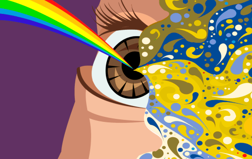
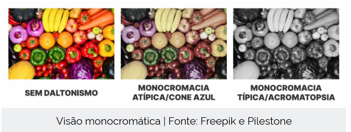
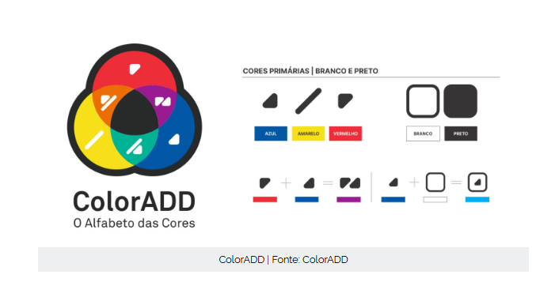
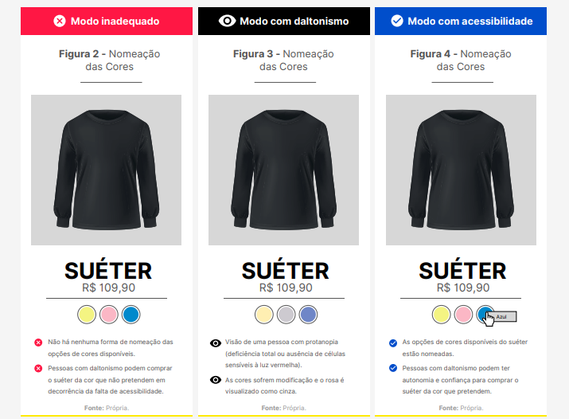
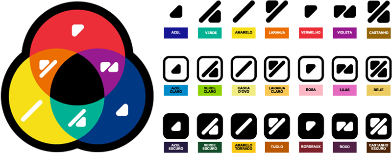

DALTONISMO
CORES
Explore o universo das cores, suas propriedades físicas, percepção visual e aplicações na arte, design e tecnologia.
Explore o universo das cores, suas propriedades físicas, percepção visual e aplicações na arte, design e tecnologia.

O daltonismo, também chamado de discromatopsia ou até mesmo de deficiência visual das cores, refere-se à dificuldade de identificar e diferenciar certos intervalos de cores. De acordo com o Conselho Federal de Medicina, cerca de 5% da população mundial possui algum tipo de daltonismo. Você achou pouco? Isso representa aproximadamente 390 milhões de pessoas no planeta. Há quem tenha daltonismo em decorrência de fatores genéticos mais comum -, e ainda quem adquira ao longo da vida, principalmente em razão de doenças e lesões, entre outros motivos. No que se refere à classificação, existem oito tipos de daltonismo, além da presença de certos graus, como leve, moderado e severo. ito ultiliada por pintores do Renascimento.
Por fim, há ainda os tipos de daltonismo chamados de monocromáticos/acromáticos, quando há apenas um cone sem deficiência ou todas as células fotossensíveis com algum tipo de deficiência ou ausência. São divididos em dois tipos: monocromacia atípica/monocromacia do cone azul, quando há apenas o funcionamento do cone sensível à luz azul, e monocromacia típica/acromatopsia, tipo de daltonismo que vê somente em escala de cinza. A seguir, observe, respectivamente, também a simulação de algumas frutas e legumes para pessoas sem daltonismo e pessoas com monocromacia do cone azul e acromatopsia:

A fim de tornar o guia de boas práticas o mais acessível possível e garantir autonomia e segurança a profissionais que, porventura, possam ter algum tipo de deficiência, o projeto conta com o apoio do ColorADD, um sistema de identificação de cores único, inclusivo, universal e transversal, criado pelo designer português Miguel Neiva, que associa um determinado símbolo gráfico a uma cor. Dessa maneira, torna-se possível que a cor de cada página do material possa ser identificada facilmente por pessoas com daltonismo.

Esse é um mito muito comum. A maioria das pessoas daltônicas apenas tem dificuldade em distinguir certas cores, especialmente combinações como vermelho e verde ou azul e amarelo. A visão totalmente sem cores é extremamente rara.
Como a forma mais frequente da condição está ligada ao cromossomo X, homens têm maior probabilidade de herdar a alteração. Estima-se que cerca de 8% dos homens tenham algum grau de daltonismo, contra menos de 1% das mulheres.
Em certos casos, diferenças de contraste e textura ficam mais evidentes para elas. Isso pode ajudar a identificar camuflagens, detalhes em imagens ou objetos que passam despercebidos para outras pessoas.
Pessoas que sofrem com Daltonismo podem acabar sofrendo bastante até mesmo para comprar uma roupa, por isso a importâncida de se atentar aos detalhes. Ainda que em deteminadas circunstâncias a cor seja vista como um código praticamente indispensável, há soluções que podem proporcionar uma aplicação mais responsiva para quem possui algum tipo de daltonismo, como simplesmente nomeá-las.

ASSOCIANDO CORES DE UTRA FORMA
Crie cartões que indiquem cores de acorco com os simbolos para sua associação.
Em vez de depender apenas da cor, cada cor terá um símbolo:
Vermelho = ★
Azul = ●
Verde = ▲
Amarelo = ■
Mostre os cartões coloridos com os símbolos juntos.
Exemplo:
🟥 ★
🟦 ●
🟩 ▲
🟨 ■
